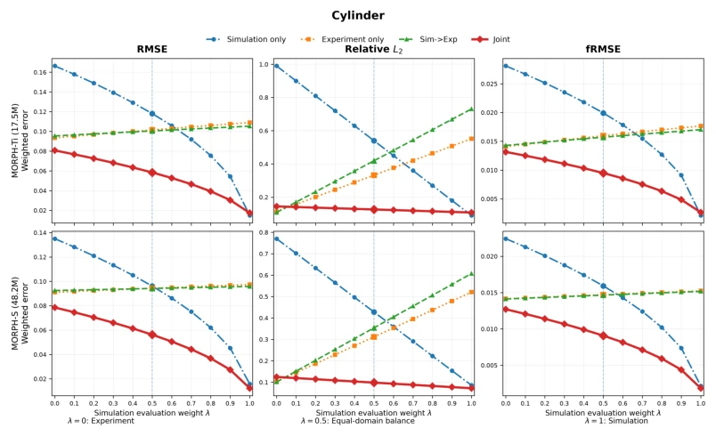
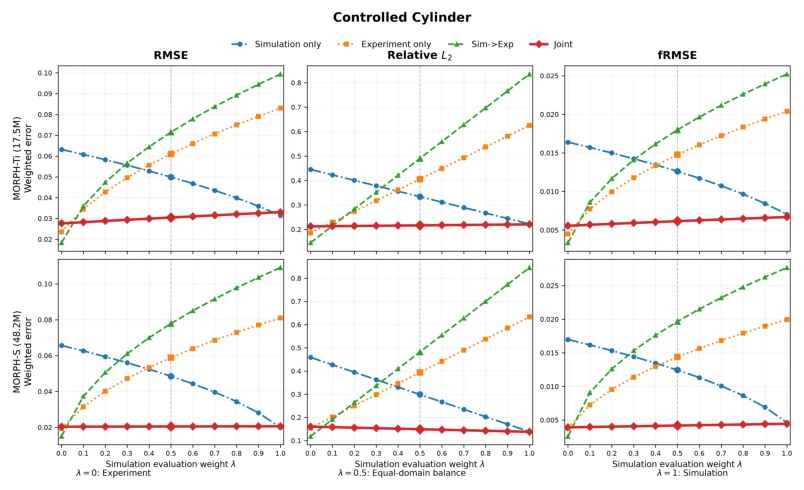
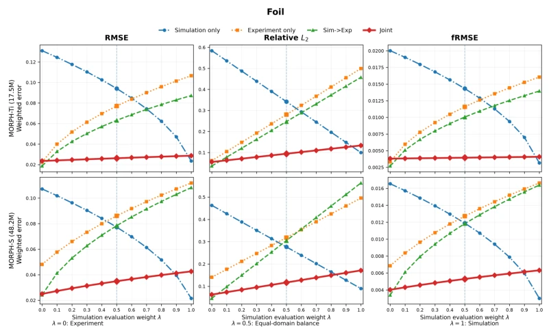
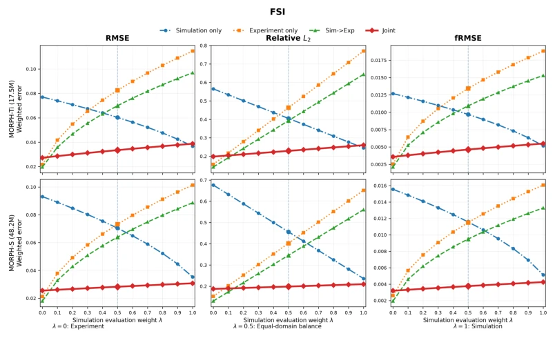

This paper pours cold water on colleagues obsessed with "Sim-to-Real" fine-tuning: You think the model understands reality better after fine-tuning? No, it simply forgets simulation capabilities completely, becoming a "single-subject top student". The authors prove with solid experiments that the traditional Sim→Exp process, in pursuing experimental data fitting, often leads to simulation domain performance collapse (catastrophic forgetting). Although Joint training is not always first in pure experimental metrics, it wins completely in the balance of "having both". However, this paper also has a bit of a "Versailles" tone, after all it did not invent a new architecture, just applied "dual cultivation" training to the MORPH model, and experiments are all on fluid systems, so the universality for physical systems remains questionable. Overall, this is an excellent work that uses data to "slap the face" of "single-task fine-tuning superstition"; although it does not solve all problems, it points out the direction.
研究动机Motivation
在物理系统建模中，数值仿真提供海量但含噪声的数据，而真实实验数据稀缺且昂贵。现有工作如RealPDEBench [Hu et al., 2026] 主要关注如何利用仿真预训练来提升实验预测，即标准的Sim→Exp迁移。然而，这种串行微调策略存在严重缺陷：一旦开始针对实验数据微调，模型参数更新不再受仿真风险约束，极易导致“仿真域遗忘”（simulation-domain forgetting），即模型在实验数据上表现变好，但在仿真数据上性能大幅下降。Blitzer et al. [2007] 指出域适应中的风险权衡问题，但现有方法往往忽略了在适应新域时保留旧域能力的重要性。本文旨在解决这一“适应-保留”的权衡难题，提出如果模型需同时服务于仿真和实验，应如何平衡两者的训练目标，避免为了适应实验而牺牲仿真能力。
In physical system modeling, numerical simulation provides massive but noisy data, while real experimental data is scarce and expensive. Existing work such as RealPDEBench [Hu et al., 2026] mainly focuses on how to use simulation pre-training to improve experimental prediction, i.e., standard Sim→Exp transfer. However, this serial fine-tuning strategy has serious flaws: once fine-tuning starts targeting experimental data, model parameter updates are no longer constrained by simulation risk, easily leading to "simulation-domain forgetting", i.e., the model performs better on experimental data but performance drops significantly on simulation data. Blitzer et al. [2007] point out the risk trade-off problem in domain adaptation, but existing methods often ignore the importance of retaining old domain capabilities when adapting to new domains. This paper aims to solve this "adaptation-retention" trade-off dilemma, proposing how to balance the training objectives of both if the model needs to serve simulation and experiments simultaneously, avoiding sacrificing simulation capabilities to adapt to experiments.
The core of this paper is modeling simulation and experimental prediction as a multi-objective optimization problem, containing domain-specific simulation risk Rsim and experimental risk Rexp. The overall process adopts a Joint Training strategy, i.e., each optimization step simultaneously samples one mini-batch from simulation and experimental data respectively, constructing a linear scalarized objective function Rλ(θ) = λRsim(θ) + (1-λ)Rexp(θ), where λ is set to 0.5. Unlike the serial update of Sim→Exp, Joint training retains the contribution of simulation gradients in every gradient update, thus when experimental gradients and simulation gradients conflict (g_s^T g_e < 0), it offsets part of the negative impact through the descent term of simulation gradients, preventing simulation performance collapse. To handle heterogeneous data of simulation (containing u, v, p) and experimental (containing only u, v) as well as different grids, the article selects the MORPH architecture, utilizing its field-wise cross-attention mechanism, which can uniformly process inputs of different physical fields and resolutions without padding or dropping fields. During training, all protocols use the same initialization, optimizer settings (Adam, lr=1e-4) and evaluation protocols (autoregressive prediction), ensuring the fairness of comparison.
Experiments are based on four fluid systems of RealPDEBench (Cylinder, Controlled Cylinder, FSI, Foil), comparing four training modes: Simulation only, Experiment only, Sim→Exp, and Joint, and tested under two model capacities (17.5M and 48.2M). Evaluation metrics include physical space RMSE, relative L2, and Fourier space fRMSE, and a balanced dual-domain metric bRMSE etc. is defined. Results show that Joint training achieves the best balanced performance in all 24 settings (8 dataset-capacity combinations × 3 metrics), compared to non-Joint methods, bRMSE improves by an average of 49.1%. The key finding is that although Sim→Exp is often slightly better in pure experimental metrics, simulation RMSE increases by an average of 335.5%, confirming serious forgetting phenomena; while Joint training significantly reduces simulation forgetting, even performing better than Sim→Exp in simulation domain performance. Additionally, Joint training better retains pressure field (p) information that is unobserved in experiments.

Figure 1: Cylinder: sensitivity to simulation–experiment evaluation weighting. Rows show MORPH-Ti and MORPH-S and columns show RMSE, relative L2, and fRMSE (lower is better). Here, λ = 0 weights only experimental performance and λ = 1 only simulation performance; λ = 0.5 recovers the balanced metrics in Table 2. Joint gives the lowest error for all three metrics and both capacities throughout λ = 0.1–0.9. At the single-domain endpoints, Sim→Exp is lowest only for experimental relative L2, while Simulation only becomes best for MORPH-Ti at λ = 1; Joint remains best for MORPH-S.

Figure 2: Controlled Cylinder: sensitivity to simulation–experiment evaluation weighting. Rows show MORPH-Ti and MORPH-S and columns show RMSE, relative L2, and fRMSE (lower is better). Joint gives the lowest error for all three metrics and both capacities throughout λ = 0.1–0.9. Sim→Exp is best at the purely experimental endpoint (λ = 0), whereas at λ = 1 Simulation only gives the lowest RMSE and Joint retains the lowest relative L2 and fRMSE.

Figure 3: Foil: sensitivity to simulation–experiment evaluation weighting. Rows show MORPH-Ti and MORPH-S and columns show RMSE, relative L2, and fRMSE (lower is better). Joint gives the lowest error for all three metrics over λ = 0.1–0.9 for MORPH-Ti and λ = 0.1–0.8 for MORPH-S. Sim→Exp is best at the purely experimental endpoint (λ = 0), while Simulation only becomes best near the purely simulation endpoint, at λ = 1 for MORPH-Ti and λ ≥0.9 for MORPH-S.

Figure 4: FSI: sensitivity to simulation–experiment evaluation weighting. Rows show MORPH-Ti and MORPH-S and columns show RMSE, relative L2, and fRMSE (lower is better). Joint gives the lowest error for all three metrics and both capacities throughout λ = 0.2–0.9. At λ = 0.1, Joint remains best for RMSE and fRMSE while Sim→Exp has the lowest relative L2. Sim→Exp is best at λ = 0; at λ = 1, Simulation only is best for MORPH-Ti, whereas Joint remains best for MORPH-S.